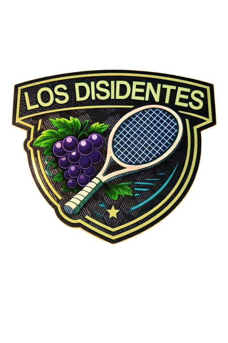
Tenis · Liga Country Sur
Jugamos juntos · Brindamos juntos · Crecemos juntos
Club Miralagos · Quinta B Zona 2
Los Disidentes nacieron con una idea simple: demostrar que se puede competir sin perder la buena onda.
Somos un grupo de amigos unidos por el deporte, el compañerismo y las ganas de disfrutar cada partido. Creemos en el respeto, la inclusión, la solidaridad y en que las decisiones se construyen entre todos.
Nuestra identidad está representada por el racimo de uvas 🍇, símbolo de amistad, encuentro y celebración. Porque los mejores momentos no siempre ocurren dentro de la cancha: también suceden alrededor de una mesa, compartiendo un asado 🔥 y una copa de vino 🍷.
Más que un equipo, somos una comunidad que eligió disfrutar del camino, crecer juntos y mantener siempre el mismo espíritu: jugar, compartir y pasarla bien.
Somos más de 18 jugadores que eligieron el mismo espíritu. Estos son los valores que nos mantienen unidos dentro y fuera de la cancha.
Al rival, al compañero y al juego. Siempre, en cada punto.
Acá hay lugar para todos. El que quiere jugar, juega.
Nos bancamos entre todos, en las buenas y en las malas.
Lo construimos en grupo, nunca de arriba hacia abajo.
Tenis, asados, brindis y mucha buena onda. Así se ve ser parte.
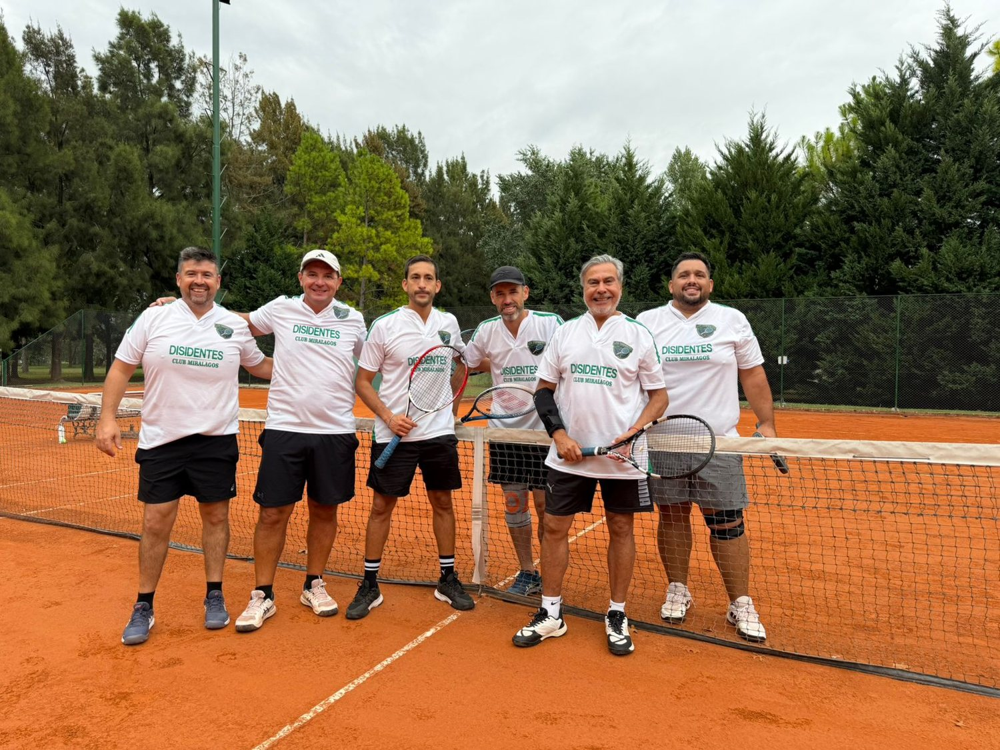
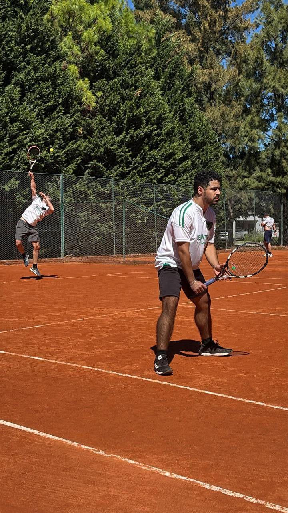
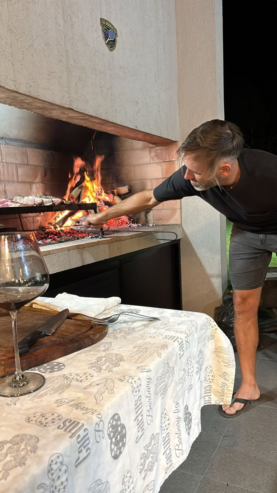
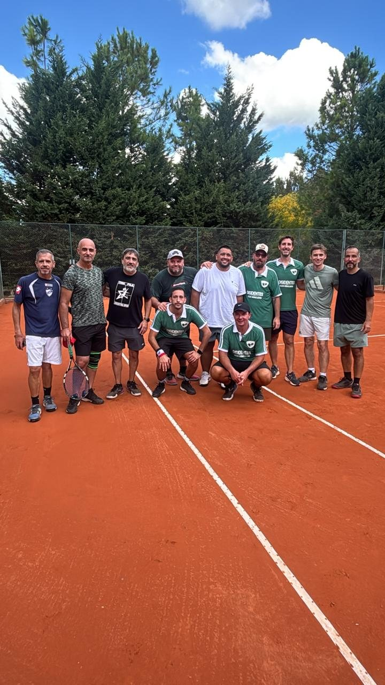
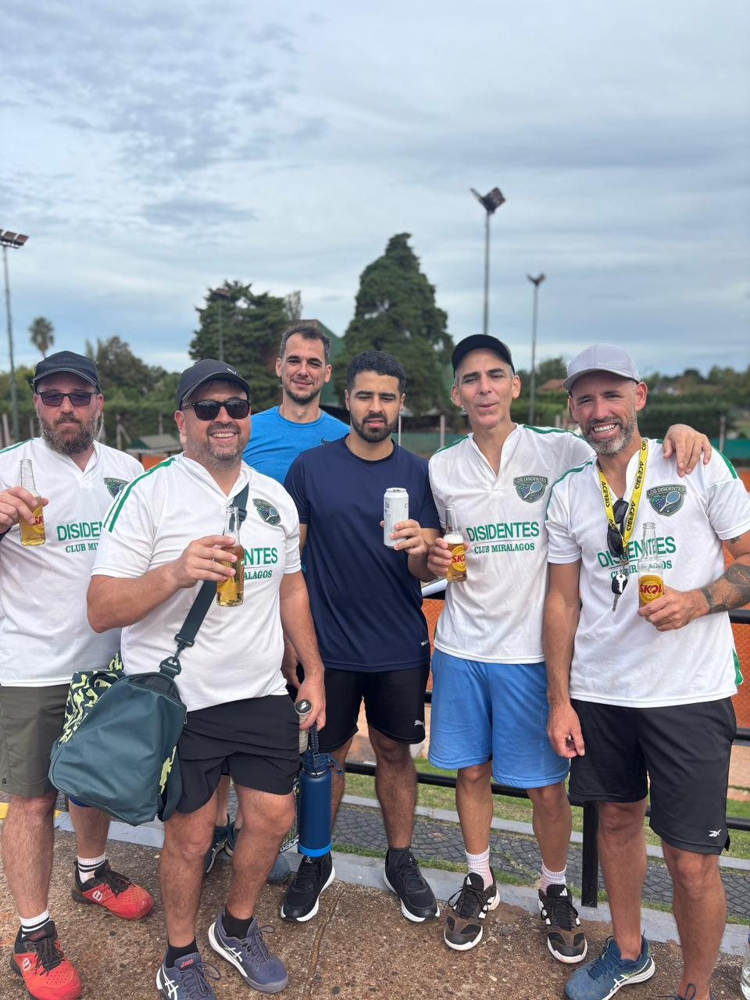
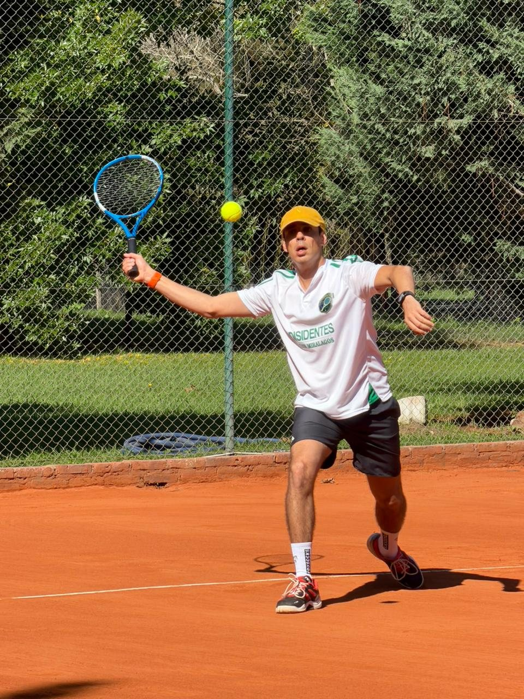
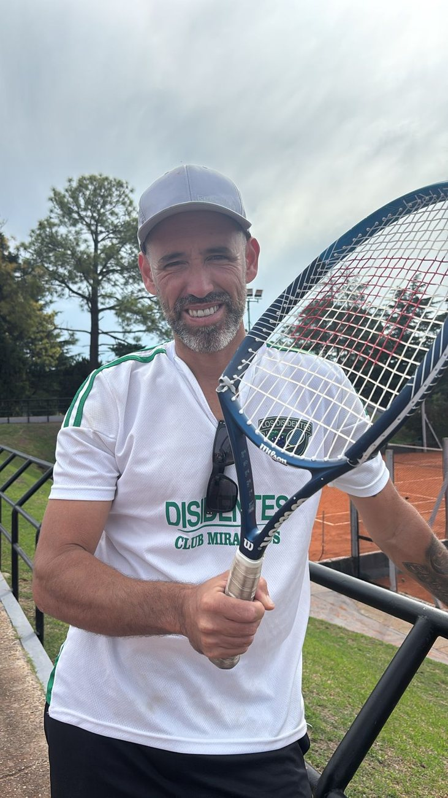
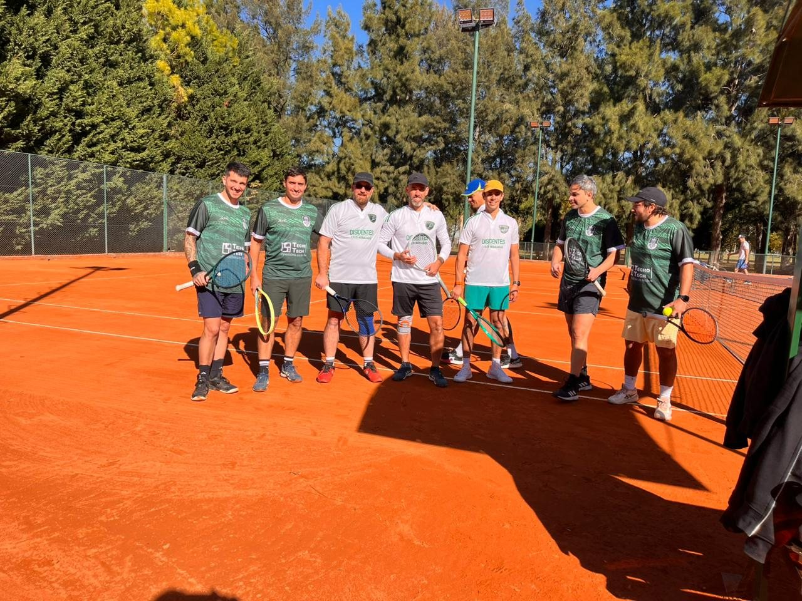
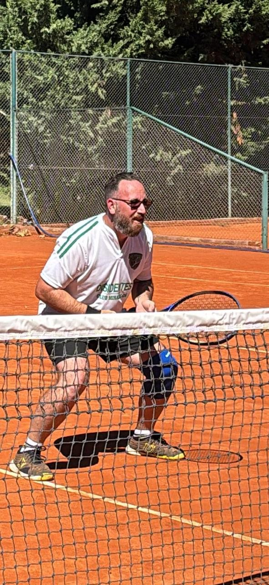
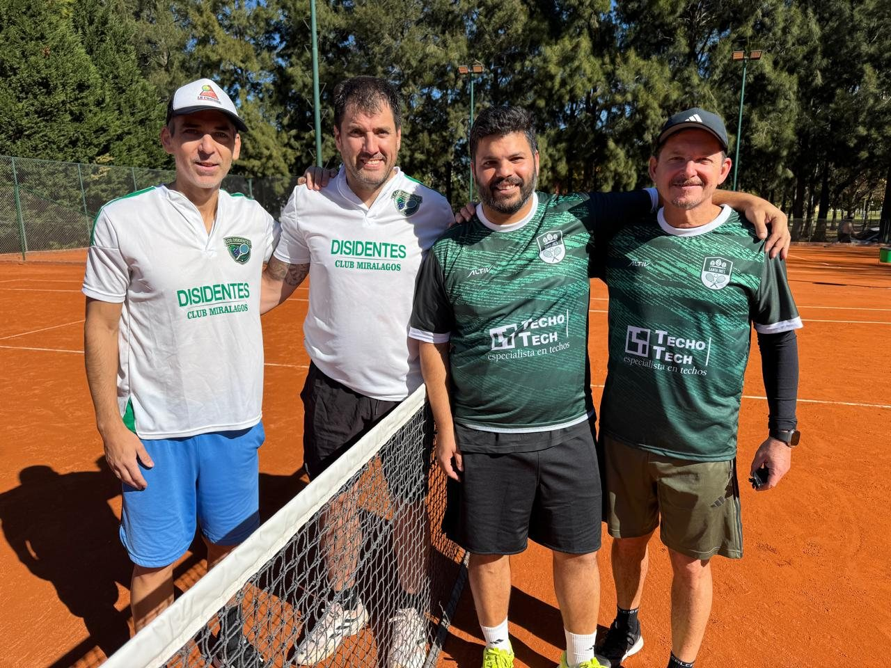
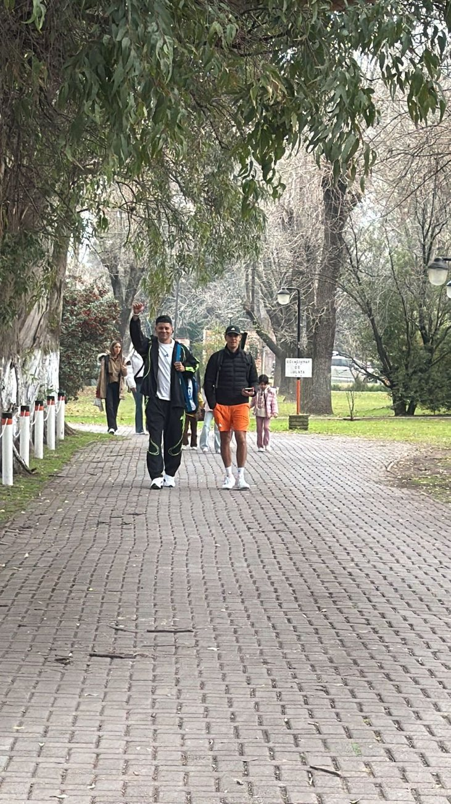
Las 9 fechas de la fase regular. Resultados oficiales de la Liga Country Sur (en canchas ganadas, formato 0-3).
Cierre de la fase regular. Los Disidentes terminaron 2°, igualados en 16 puntos con Santa Rita y Santa Inés Verde, atrás solo por diferencia de canchas.
| # | Equipo | PJ | G | P | DIF | Pts |
|---|---|---|---|---|---|---|
| 1 | Santa Rita | 9 | 7 | 2 | +13 | 16 |
| 2 | Miralagos Los Disidentes | 9 | 7 | 2 | +9 | 16 |
| 3 | Santa Inés Verde | 9 | 7 | 2 | +5 | 16 |
| 4 | Venado II | 9 | 5 | 4 | +5 | 14 |
| 5 | Brit Ajim | 9 | 5 | 4 | +5 | 14 |
| 6 | Haras del Sur Rojo | 9 | 4 | 5 | +1 | 13 |
| 7 | El Trébol | 9 | 4 | 5 | -3 | 13 |
| 8 | Fincas de San Vicente Amarillo | 9 | 3 | 6 | -9 | 12 |
| 9 | El Rebenque Bueno | 9 | 2 | 7 | -13 | 11 |
| 10 | El Sosiego Rojo | 9 | 1 | 8 | -13 | 10 |
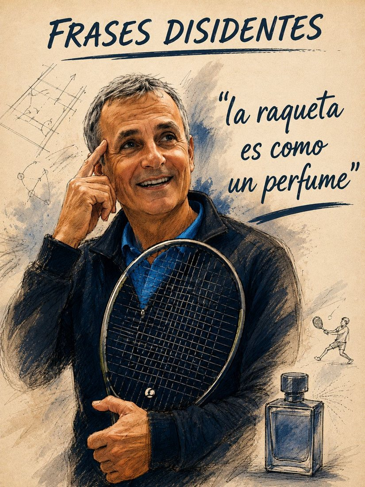
“La raqueta es como un perfume”
— Sabiduría de vestuario